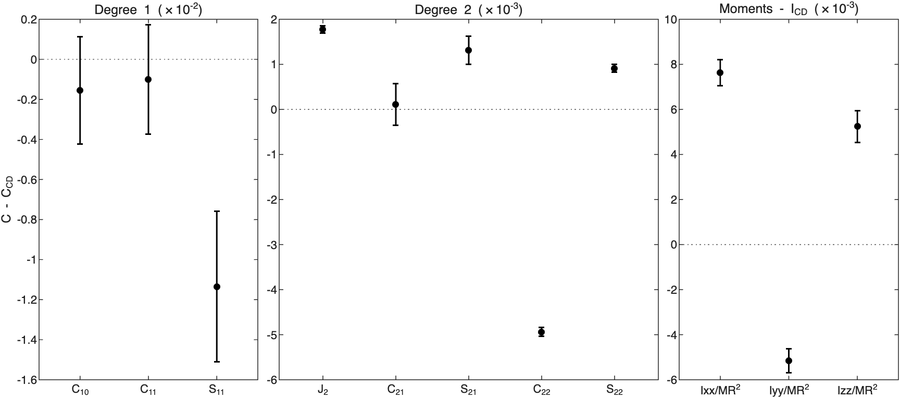
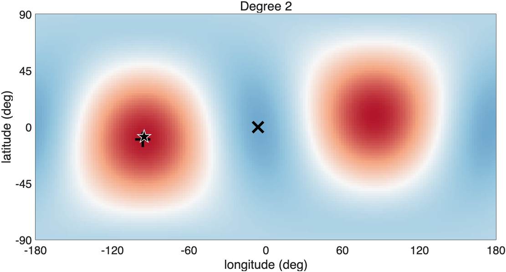
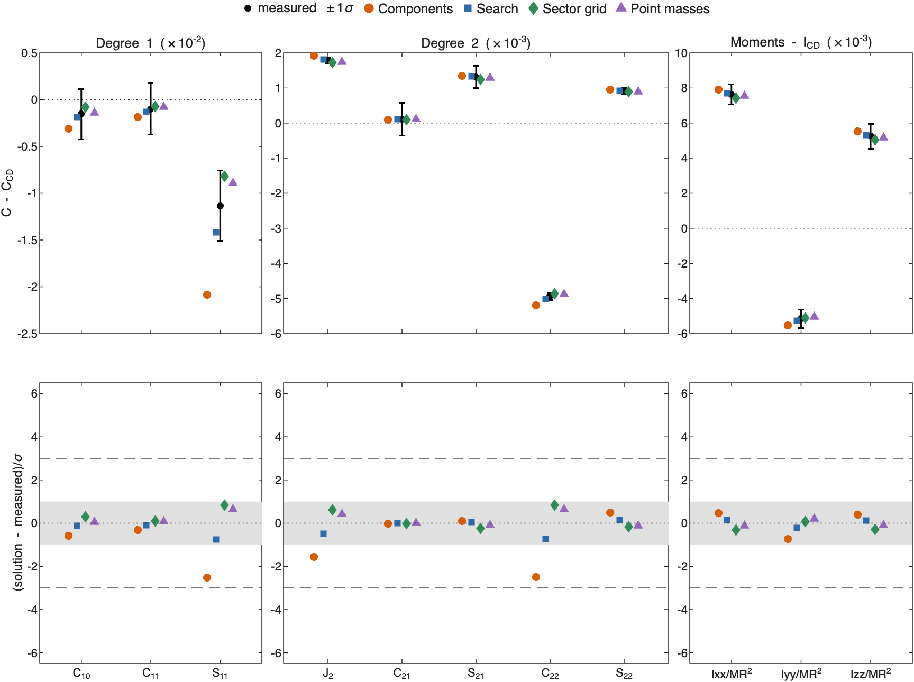
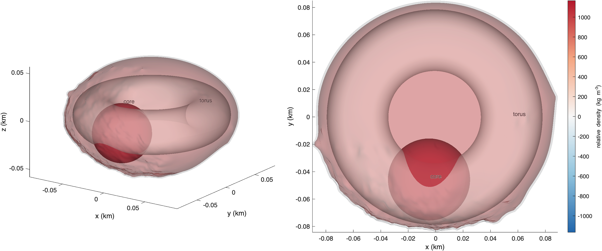
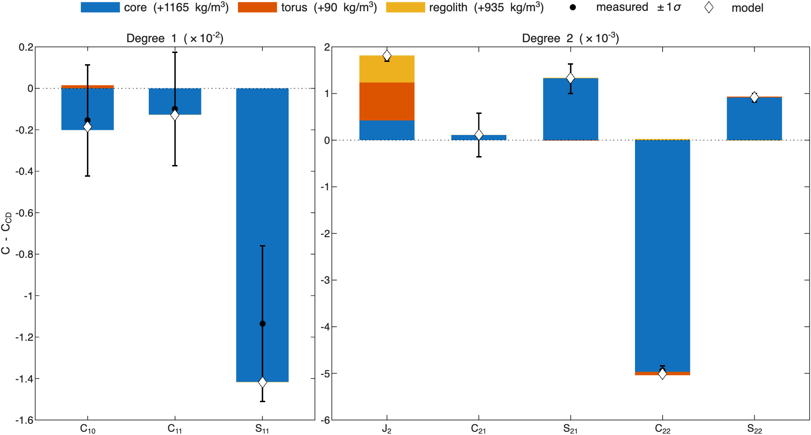
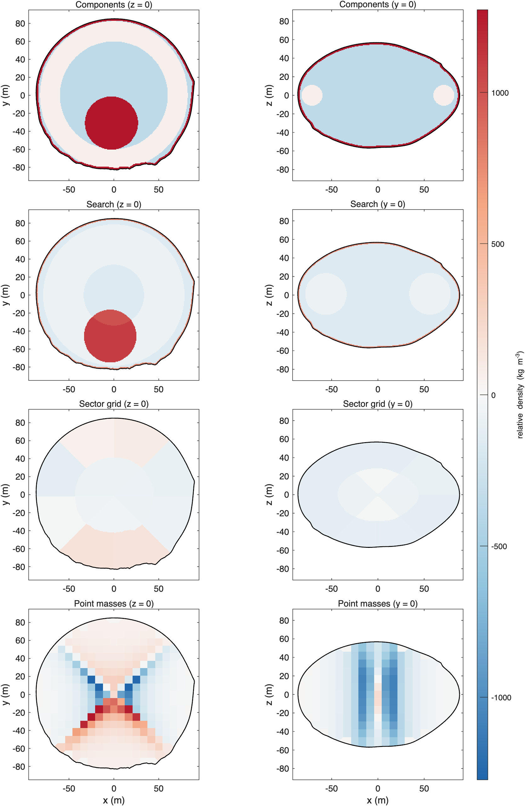
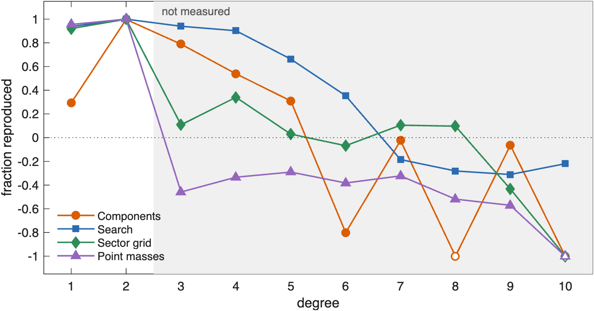

ROB-DATA4: Dimorphos#
Last edited October 28, 2026
ROB-DATA4 is the package where the measurements cannot decide and the truth can. Degree 2 and the moments of inertia say mass has moved toward the two ends of the y-axis, and degree 1 that the −y end is heavier. Four kinds of solution fit equally well, within 3 of each other in AIC: a sector grid, the point masses, the search, and a model with a dense core placed toward −y. All four put the excess on the −y side. They differ in how compact it is, and the gravity coefficients up to degree 2 cannot tell them apart. ROB's exact values and the GRASS surface point can. Both favor a compact dense core 30 to 50 m toward −y. The search's core reproduces 90% of degrees 3 to 10, and the placed core predicts the GRASS acceleration to 0.2%. The point masses and the sector grid, which spread the excess, predict neither.
| Kind | Model | Parameters | Reduced χ² | p | AIC | Exact values, degrees 1–2 | Exact values, degrees 3–10 | GRASS acceleration | GRASS direction |
|---|---|---|---|---|---|---|---|---|---|
| Sector grid | 2 × 4 × 8 | 8.0 | 0.10 | 1.00 | 16.9 | 0.93 | 0.14 | −7.3% | 0.7° |
| Point masses | 2674 points | 8.6 | 0.05 | 1.00 | 17.7 | 0.96 | −0.43 | −9.3% | 0.8° |
| Search | core, torus, layer | 9.0 | 0.08 | 1.00 | 18.7 | 0.95 | 0.90 | +2.0% | 1.4° |
| Components | core, torus, layer | 6.0 | 0.65 | 0.80 | 19.8 | 0.42 | 0.69 | −0.2% | 0.2° |
| Constant density | −13.3% | 0.9° |
The best solution of each kind, by AIC (bold: the lowest). Parameters: the effective number of parameters. Exact values: the fraction of ROB's exact coefficients a solution reproduces, over the measured degrees 1–2 and over degrees 3–10, which were not fitted (1: all; 0: no better than constant density; negative: worse). GRASS: the predicted acceleration at the surface point minus ROB's, in magnitude (% of ROB's) and direction. See How to read these pages.
1. What the measurements show#

| Measurement | C − C_CD | 1σ | In σ | What it says |
|---|---|---|---|---|
| −3 | center of mass toward −y | |||
| −21 | higher: mass toward the equator | |||
| +4 | mass toward +y in the north, −y in the south | |||
| −50 | mass toward ±y more than ±x | |||
| +10 | mass toward longitudes 45° and −135° | |||
| +13 | mass farther from the x-axis | |||
| −10 | mass closer to the y-axis | |||
| +7 | mass farther from the z-axis |
The measurements more than 3σ from constant density.
is 50σ below its value at constant density: mass has moved toward the ends of the y-axis. The moments of inertia agree: is smaller (mass closer to the y-axis), and larger. is 21σ higher, mass toward the equator. The center of mass is 1.8 m toward −y, 3σ: the −y end carries more.
2. Where the mass is#

Degree 2 puts the excess at both ends of an axis through latitude −9°, longitude −95° and the opposite point: the y-axis, tilted 9°. The center of mass points to the same place, −8°, −95°. The model built for this package therefore places a dense core along the center-of-mass offset by its χ² profile, with a torus and a surface layer for the part of the core does not make. The search does the same with the core's position, the torus's size and the layer's thickness free.
3. How well each solution fits#

The sector grid, the point masses and the search match every measurement within 1σ. The placed core misses and by 2.5σ: it moves the center of mass too far toward −y. The four span 2.9 in AIC: a tie. With 18 measurements and 6 to 9 effective parameters, degree 2 and the moments determine where the excess is but not its form.
4. The core model#

| Component | Shape and place | Relative density (kg/m³) | Density (kg/m³) | Mass anomaly (kg); makes most of |
|---|---|---|---|---|
| core | sphere, radius 30 m, 46 m from the center toward lat −8°, lon −95° | +1165 ± 653 | 2548 | ; −50σ, +10σ |
| torus | torus, ring radius 56 m, tube radius 22 m, axis 0° from z, center 1 m from the center | +90 ± 1260 | 1473 | ; −9σ, −1σ |
| regolith | surface layer, 0 to 1 m deep | +935 ± 1703 | 2318 | ; −7σ, +0σ |
Background density 1383 kg/m³ (bulk density 1540 kg/m³). Makes most of: the component's part of each coefficient in units of its 1σ.

In the search's solution the core alone makes and , and the center-of-mass offset. It is a sphere of 30 m radius, 46 m from the center toward −y, 1165 ± 653 kg/m³ denser than the background. The torus and the layer share , and neither is resolved. The placed model (core, torus and layer with the core on its χ² profile) puts the core 31 m toward −y, at +2530 ± 853 kg/m³, with a resolved torus (+419 ± 170) and layer (+1787 ± 799). Degree 2 and the moments allow both: a lighter core farther out, or a denser one closer in.
5. Point masses and components side by side#

| Solution | Mass moved (% of M) | Excess centered at (m) | Deficit centered at (m) |
|---|---|---|---|
| Components | 9.9 | (−2, −27, −4) | (0, 4, 1) |
| Search | 4.5 | (−4, −44, −6) | (0, 5, 1) |
| Sector grid | 2.6 | (−3, −34, −3) | (1, 8, 2) |
| Point masses | 6.7 | (−2, −15, −4) | (−0, 5, −0) |
| Correlation | Components | Search | Sector grid | Point masses |
|---|---|---|---|---|
| Components | 1.00 | 0.67 | 0.21 | 0.37 |
| Search | 0.67 | 1.00 | 0.44 | 0.21 |
| Sector grid | 0.21 | 0.44 | 1.00 | 0.34 |
| Point masses | 0.37 | 0.21 | 0.34 | 1.00 |
Mass moved: the mass above the bulk density, as a percentage of the mass of the body. Excess and deficit centers are from the center of figure. Correlation: of the relative densities of the solutions, 8.3 m cell by 8.3 m cell.
All four put the excess on the −y side: its center is 15 m toward −y for the point masses, 27 to 44 m for the others. The point masses mimic the core. On the z = 0 plane they gather a dense lobe 10 to 50 m toward −y, where the placed core is, with light bands on either side. But they keep it closer to the center and spread it out. The sector grid spreads it over the whole −y sector. The coefficients cannot choose between these forms. The cell-by-cell correlations are 0.21 to 0.44 between any two kinds, except the search and the placed core (0.67).
6. Against ROB's exact values and the GRASS point#

Beyond degree 2 the four separate. The search's core reproduces 94% of degree 3 and 90% of degree 4, and 90% of degrees 3 to 10 together. The placed core reproduces 69% of degrees 3 to 10. The sector grid reproduces 14%, and the point masses do worse than constant density (−0.43). A compact core makes the odd degrees the hidden interior has; a spread excess does not.
The GRASS point lies on the surface at the −y end, above the core. There the excess matters most: constant density predicts an acceleration 13.3% too small. The placed core predicts it to 0.2% and the search to 2.0%. The sector grid and the point masses, whose excess is farther from the surface, are 7.3% and 9.3% low. One surface measurement over the anomaly separates solutions that the gravity coefficients cannot.